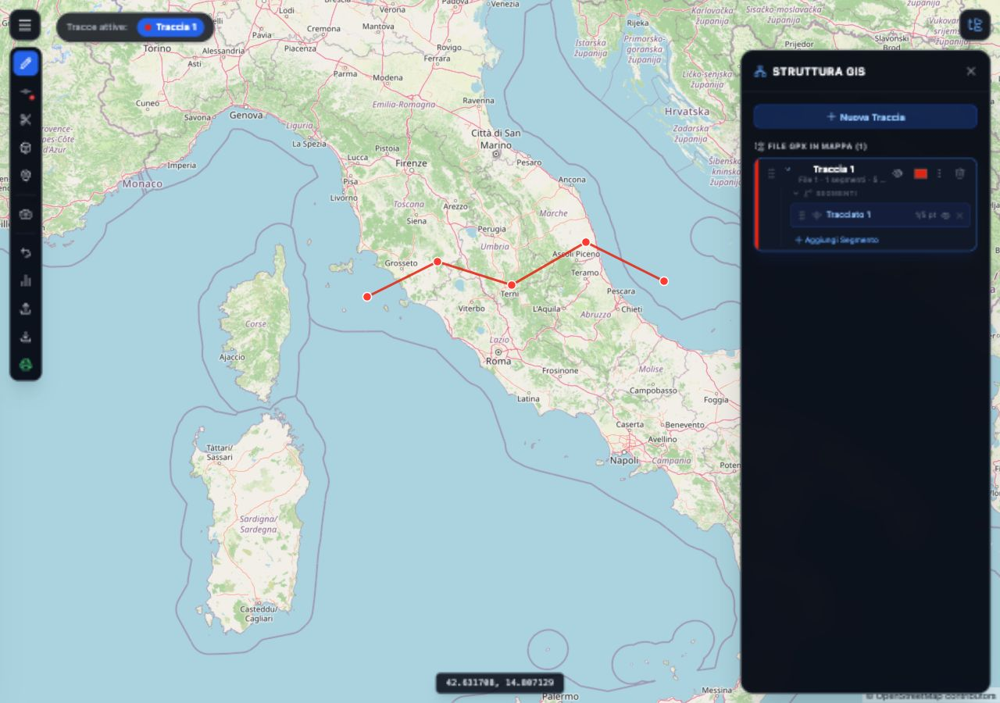
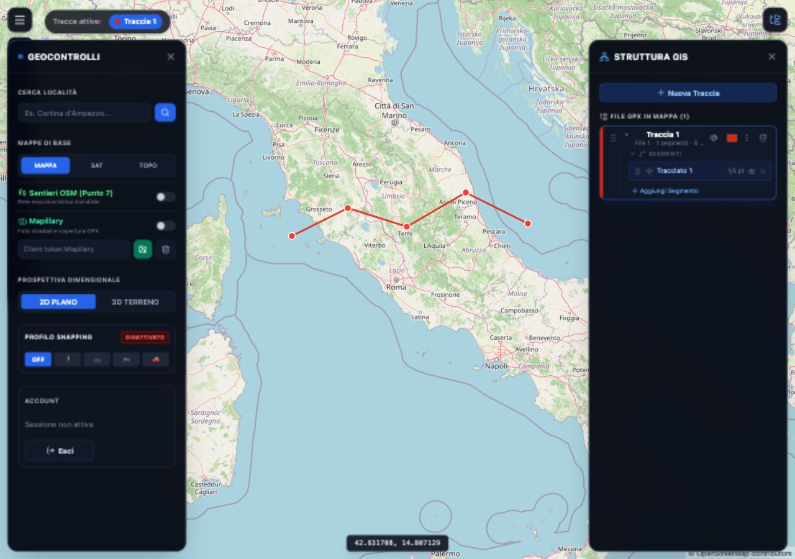
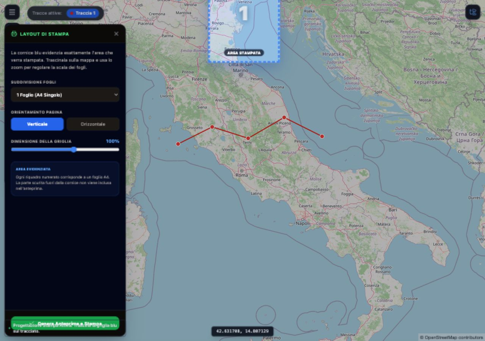
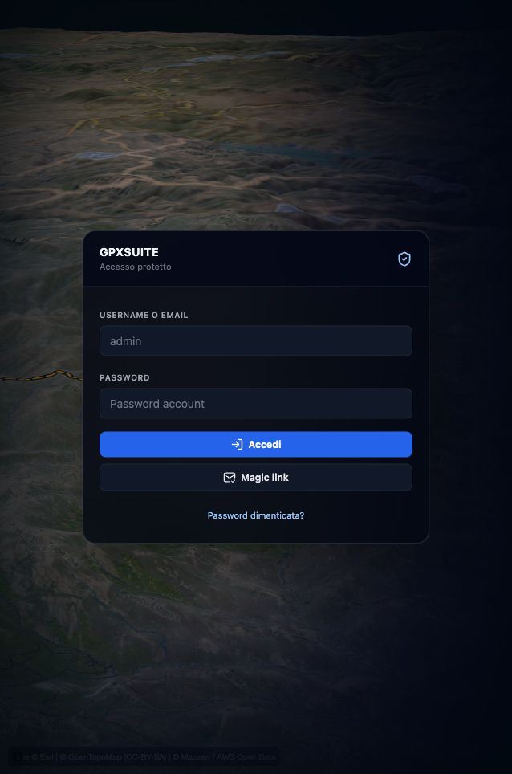

GpxSuite Wiki
Guida Rapida per l'Utente
Se vuoi arrivare subito al risultato, parti dal caso che ti riguarda. Le sezioni successive spiegano ogni strumento con più dettaglio.
Ho un GPX da correggere
- Accedi e attendi il caricamento della mappa.
- Clicca Importa file GPX nella barra strumenti.
- Apri Struttura GIS per controllare tracce, segmenti e waypoint.
- Usa Taglia Traccia, Elimina punti dentro area o i menu del pannello GIS.
- Clicca Esporta file GPX quando la traccia è pronta.
Voglio disegnare un percorso nuovo
- Clicca Nuova Traccia dalla barra a sinistra o dal pannello GIS.
- Se vuoi seguire strade e sentieri, scegli un Profilo Snapping.
- Clicca sulla mappa nei punti chiave del percorso.
- Aggiungi waypoint con Inserisci Waypoint per rifugi, fonti o bivi.
- Controlla profilo altimetrico e statistiche prima di esportare.
Voglio stampare una carta
- Posiziona la mappa sulla zona interessata.
- Clicca Progetta e Stampa Mappa.
- Trascina la cornice blu sull'area da stampare.
- Scegli fogli, orientamento e dimensione della griglia.
- Clicca Genera Anteprime e Stampa.
Devo solo consultare una traccia
- Importa il GPX o aprilo dall'archivio locale se è già presente.
- Usa MAPPA, SAT o TOPO dal Menu Principale.
- Attiva Sentieri OSM se ti serve la rete escursionistica.
- Mostra o nascondi statistiche con il pulsante del profilo altimetrico.
- Usa gli occhi nel pannello GIS per confrontare più tracce.
Schermate d'Uso dell'Applicazione
Queste schermate derivano da una sessione locale di prova: è stata creata una traccia con 5 punti, poi sono stati aperti i pannelli principali che l'utente usa durante la pianificazione.



Nota: le schermate sono state generate con una copia temporanea locale dell'app usata solo per documentazione, senza modificare la configurazione reale di autenticazione del progetto.
1. Introduzione
Benvenuto nella Guida Utente di GpxSuite! Questo strumento ti permette di pianificare, esplorare e modificare percorsi per le tue avventure (trekking, mountain bike, moto, ecc.) direttamente dal tuo browser.
Tutte le modifiche che fai vengono salvate automaticamente in locale sul tuo computer o telefono. Se chiudi la pagina e la riapri, ritroverai il tuo lavoro esattamente dove lo avevi lasciato.
Flusso di lavoro consigliato
- Apri l'app, accedi e verifica che il dispositivo sia autorizzato.
- Importa un GPX oppure crea una nuova traccia con la matita.
- Correggi segmenti, waypoint e visibilità dalla Struttura GIS.
- Controlla distanza, quota e pendenza nel profilo altimetrico.
- Esporta il GPX finale o genera le tavole A4 per la stampa.
2. Caricare e Salvare i Percorsi (GPX)
Importare un file
Per aprire un percorso esistente, clicca sull'icona Carica () nella barra degli strumenti a sinistra e seleziona un file in formato .gpx dal tuo computer. La mappa si sposterà automaticamente sul punto di partenza del percorso caricato.
Esportare il lavoro
Quando hai finito di modificare una traccia, puoi scaricarla cliccando sull'icona Scarica (). Verrà salvato sul tuo dispositivo
un file .gpx pronto per essere inviato al tuo navigatore, smartphone o smartwatch.
Dettagli pratici
- I file importati vengono convertiti in tracce, segmenti e waypoint modificabili nel pannello GIS.
- Le quote mancanti vengono integrate quando possibile interrogando il terreno della mappa.
- Durante l'esportazione viene applicata una semplificazione Douglas-Peucker per ridurre il peso del GPX senza stravolgere la geometria.
Come gestire più file
- Importa un file alla volta, poi apri Struttura GIS.
- Rinomina ogni traccia con un nome leggibile, ad esempio "Salita", "Rientro" o "Variante".
- Usa il selettore colore per distinguere le tracce sovrapposte.
- Nascondi temporaneamente i livelli che non stai usando con l'icona a forma di occhio.
- Esporta solo quando la traccia finale è quella attiva e visibile.
3. Strumenti di Editing
La barra a sinistra contiene tutti gli strumenti necessari per creare o correggere i tuoi percorsi. Se fai un errore, ricorda che puoi sempre usare l'icona Annulla ().
Matita (Nuova Traccia)
Inizia a disegnare un nuovo percorso. Basta cliccare in vari punti della mappa. L'app rileverà automaticamente le altitudini (quote) dei punti che hai cliccato.
Forbici (Taglia Traccia)
Vuoi spezzare un percorso in due parti? Seleziona le forbici e clicca sulla traccia nel punto in cui vuoi dividerla.
Gomma ad Area (Box Delete)
Ti permette di eliminare rapidamente un tratto sbagliato. Clicca un punto di inizio e uno di fine per formare un rettangolo rosso: tutto ciò che si trova al suo interno verrà rimosso.
Puntina (Aggiungi Waypoint)
Aggiungi punti di interesse (ad es. un rifugio, una fontana o un bivio). Una volta creato, puoi cliccarci sopra per cambiarne il nome, il simbolo e la descrizione.
Correzione consigliata di una traccia
- Seleziona la traccia corretta in Struttura GIS.
- Usa Taglia Traccia se devi separare una variante dal percorso principale.
- Usa Elimina punti dentro area per rimuovere una porzione errata o un tratto duplicato.
- Se il risultato non è quello voluto, premi Annulla modifica o Ctrl+Z.
- Controlla il profilo altimetrico: salti di quota anomali spesso indicano punti GPX sbagliati.
Uso dei waypoint
- Clicca Inserisci Waypoint, poi scegli il punto sulla mappa.
- Modifica nome e dettagli dal popup o dall'icona modifica nel pannello GIS.
- Usa i waypoint per note operative: acqua, bivio, parcheggio, punto pericoloso, rifugio.
- Nascondi il gruppo waypoint se vuoi leggere meglio la traccia sulla mappa.
4. Calcolo Automatico del Percorso (Calamita)
Aggiungere i punti uno per uno a mano in linea retta può essere noioso. Attivando l'icona della Calamita (nella barra sinistra), l'app traccerà automaticamente il percorso collegando i punti che clicchi seguendo la rete di sentieri e strade reali!
Nel Menu Principale (icona con tre linee orizzontali in alto a sinistra), puoi selezionare il tuo mezzo di trasporto nella sezione "Profilo Snapping". Puoi scegliere tra: a piedi, in bicicletta, in moto o in auto. L'algoritmo calcolerà la via migliore in base alla tua scelta.
Lo snap usa servizi esterni di routing: se la rete non risponde, continua a disegnare in linea retta e riprova quando la connessione torna stabile.
Quando usare ogni profilo
- OFF: linee dirette tra i punti, utile per creste, tracce fuori sentiero o correzioni manuali.
- Piedi: escursionismo e percorsi dove contano sentieri, strade bianche e passaggi pedonali.
- Bici: itinerari ciclabili e sterrati pedalabili.
- Moto: itinerari mototuristici o percorsi stradali con esigenze diverse dall'auto.
- Auto: collegamenti stradali e trasferimenti su rete carrabile.
Buone pratiche
- Imposta il profilo prima di disegnare il tratto.
- Clicca pochi punti chiave: incroci, tornanti, cambi di strada.
- Disattiva lo snap quando vuoi collegare manualmente due punti fuori rete.
- Controlla subito il risultato: se il routing prende una strada sbagliata, annulla e aggiungi un punto intermedio.
5. Stili di Mappa e Vista 3D
Apri il Menu Principale per esplorare le opzioni di visualizzazione:
- Mappe di base: Puoi passare dalla mappa stradale a quella Satellitare o a quella Topografica (ideale per vedere le curve di livello in montagna).
- Sentieri OSM: Selezionando questa spunta, appariranno in evidenza i sentieri escursionistici mondiali ufficiali, utili per orientarsi.
- Vista 3D: Clicca su "3D Terreno" per far emergere i rilievi montuosi. Per inclinare la mappa a tuo piacimento e ruotarla, tieni premuto il tasto CTRL (o Command) sulla tastiera mentre trascini con il mouse. (Se usi un dispositivo touch, usa semplicemente due dita!).
Quale mappa scegliere
- MAPPA: migliore per orientarsi rapidamente, cercare paesi, strade e nomi.
- SAT: utile per verificare boschi, radure, cave, strade sterrate e zone aperte.
- TOPO: consigliata per montagna, dislivelli, curve di livello e pianificazione escursionistica.
- 3D TERRENO: utile prima della stampa o quando vuoi capire esposizione, vallate e creste.
6. Analisi Offroad
Vuoi sapere se un tratto che hai disegnato è asfaltato o sterrato? Apri la Struttura GIS (l'icona ad albero sulla destra) per vedere l'elenco delle tue tracce.
Fai click con il tasto destro sul nome della tua traccia (oppure tieni premuto a lungo su mobile) per aprire il menu delle opzioni, quindi seleziona "Estrai Offroad". L'app interrogherà il database cartografico e creerà un livello colorato sopra la tua traccia per mostrarti esattamente dove il percorso non è asfaltato!
Come leggere il risultato
- Usa l'analisi come supporto decisionale: la classificazione dipende dai dati disponibili sulla mappa.
- Confronta sempre il risultato con mappa satellitare e, se disponibile, Mapillary.
- Se una traccia è molto lunga, analizza prima i segmenti principali per ridurre confusione visiva.
- Per un itinerario stampabile, lascia visibili solo i layer davvero utili.
7. Stampa Topografica A4
GpxSuite integra uno strumento utilissimo per generare cartine stampabili, permettendoti di portarle con te durante l'escursione:
- Clicca sull'icona della Stampante verde a sinistra.
- Apparirà una griglia con bordi blu sopra la mappa. Trascina questa griglia sulla zona che vuoi stampare.
- Nel pannello aperto, scegli quanti fogli A4 ti servono, la grandezza della stampa e se orientare la pagina in orizzontale o verticale.
- Clicca su "Genera Anteprime". Il sistema "fotograferà" la mappa ad altissima risoluzione per te.
- Usa la finestra di stampa del tuo sistema per salvare tutto come PDF. Ricorda di abilitare la "Stampa sfondi/colori" nel tuo browser!
Controlli prima della stampa
- Attendi che le tessere della mappa siano caricate prima di generare le anteprime.
- Controlla orientamento, numero di pagine e scala prima di aprire la finestra di stampa.
- Se salvi in PDF, abilita sempre la stampa di sfondi e colori del browser.
Esempi pratici di layout
- 1 Foglio A4: uscita breve, zona ristretta, promemoria rapido.
- 2 Fogli Orizzontali: percorso lineare da ovest a est o valle lunga.
- 2 Fogli Verticali: salita e discesa sviluppate in direzione nord-sud.
- 4 o 6 Fogli: area ampia, anello lungo o stampa da portare come cartografia principale.
Sequenza sicura prima del PDF
- Usa TOPO o SAT in base al tipo di uscita.
- Attiva solo tracce e waypoint necessari.
- Apri Progetta e Stampa Mappa e centra la cornice blu.
- Genera le anteprime.
- Conferma con Lancia Stampa (A4 PDF).
8. Street View (Mapillary)
Vuoi vedere un'anteprima fotografica reale del sentiero o della strada che stai studiando?
- Nel Menu Principale, sotto la voce Mapillary, inserisci il Token (una chiave che devi procurarti dal sito di Mapillary e che serve ad abilitare il servizio) e attivalo.
- Appariranno sulla mappa delle linee verdi fluo: indicano che lì qualcuno è passato con una telecamera.
- Seleziona l'icona della telecamera nella barra a sinistra, quindi clicca su una linea verde. Si aprirà un riquadro con foto panoramiche o a 360° esplorabili interattivamente!
Quando Mapillary è utile
- Per controllare se una strada è asfaltata, sterrata, chiusa o privata.
- Per verificare bivi, cancelli, ponti, guadi e segnaletica.
- Per confermare un tratto offroad prima di esportare o stampare.
- Per confrontare il percorso con immagini reali quando la mappa satellitare non basta.
9. Sicurezza e Accesso
Se l'applicazione è stata configurata per essere protetta con password (ad esempio per uso all'interno di un'azienda o di un gruppo chiuso):
Connessione sicura ai dispositivi
Per accedere ti basterà inserire la mail e la password fornite dall'amministratore (o usare l'accesso rapido tramite Magic Link inviato via mail). La prima volta che accedi da un computer o da un telefono nuovo, il tuo accesso dovrà essere "Approvato" manualmente dall'amministratore prima che tu possa entrare per ragioni di sicurezza.
Pannello Amministratore
Se sei un gestore della piattaforma, puoi accedere al Pannello Amministratore (icona a forma di scudo nel menu principale) per autorizzare nuovi dispositivi, revocare gli accessi o creare nuovi account utente in maniera veloce.
Cosa succede in locale
- Se
AUTH_REQUIREDè attivo, l'app resta protetta anche durante una simulazione locale. - La mappa di sfondo del login può caricarsi, ma l'editor GPX viene inizializzato solo dopo una sessione autorizzata.
- Un nuovo dispositivo può entrare in stato pending finché un amministratore non lo approva dalla dashboard.
Accesso utente passo-passo
- Inserisci username o email.
- Inserisci la password oppure richiedi un Magic link.
- Se compare "Autorizzazione richiesta", avvisa l'amministratore e lascia il dispositivo in attesa.
- Dopo l'approvazione, premi Riprova o ricarica la pagina.
- Usa Esci quando lavori su un computer condiviso.
Azioni amministratore
- Apri Menu Principale e poi Admin.
- Controlla dispositivi pending e approva solo quelli riconosciuti.
- Revoca dispositivi non più usati o compromessi.
- Crea account con nomi riconoscibili, così la gestione rimane chiara nel tempo.
10. Simulazione Locale Verificata
Simulazione eseguita in locale il 2 giugno 2026 servendo il progetto con il server statico Python, senza build step e senza installare dipendenze.

http://127.0.0.1:8000/: il gate di accesso viene mostrato correttamente e blocca l'editor finché la sessione non è autorizzata.
Avvio locale
- Apri il terminale nella cartella del progetto.
- Esegui
python3 -m http.server 8000. - Apri
http://127.0.0.1:8000/nel browser. - Usa
http://127.0.0.1selocalhostmostra una versione in cache.
Risultato osservato
- La pagina carica il gate di autenticazione.
- La card mostra accesso con username/email, password e magic link.
- La UI operativa resta chiusa senza sessione Supabase valida.
- La protezione fail-closed evita accessi non autorizzati anche in locale.
Checklist per una simulazione completa
- Conferma che
src/js/auth-config.jspunti al progetto Supabase corretto. - Accedi con un account abilitato e approva il dispositivo dalla dashboard amministratore se richiesto.
- Importa un GPX di prova, verifica mappa, pannello GIS e profilo altimetrico.
- Prova una modifica non distruttiva, poi usa Annulla per controllare la cronologia.
- Genera una preview A4 solo dopo il caricamento completo delle tessere mappa.
11. Problemi Comuni e Soluzioni
Non riesco ad accedere
- Controlla username/email e password.
- Se usi Magic link, verifica posta in arrivo e spam.
- Se il dispositivo è in attesa, serve approvazione amministratore.
- Se Supabase non è configurato, l'app non concede accesso.
La mappa sembra vuota
- Attendi il caricamento delle tessere.
- Verifica la connessione internet: le mappe arrivano da servizi esterni.
- Controlla che la traccia non sia nascosta nel pannello GIS.
- Usa lo zoom sulla traccia o reimporta il GPX se il file è danneggiato.
Lo snap non segue il percorso giusto
- Scegli il profilo corretto prima di aggiungere punti.
- Aggiungi punti intermedi vicino agli incroci importanti.
- Disattiva lo snap per tratti fuori rete.
- Usa Annulla modifica appena vedi un routing sbagliato.
La stampa non ha colori o sfondo
- Nel dialogo di stampa abilita sfondi/colori.
- Genera di nuovo le anteprime dopo aver cambiato mappa o zoom.
- Non stampare mentre le tessere sono ancora in caricamento.
- Salva prima in PDF se vuoi controllare il risultato.
Il GPX esportato è troppo grande
- Elimina segmenti duplicati o inutili dal pannello GIS.
- Rimuovi punti errati con la gomma ad area.
- Esporta dopo aver nascosto o cancellato layer che non servono.
- Controlla se il file originale contiene molte varianti sovrapposte.
Ho perso una modifica
- Prova subito Annulla modifica o Ctrl+Z.
- Se hai chiuso il browser, riapri l'app: lo stato locale viene ripristinato quando disponibile.
- Esporta versioni intermedie dei lavori importanti.
- Evita di cancellare cache o dati sito prima di aver salvato il GPX.